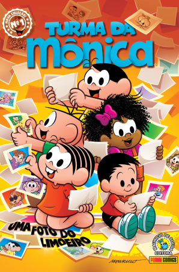
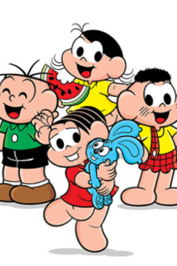
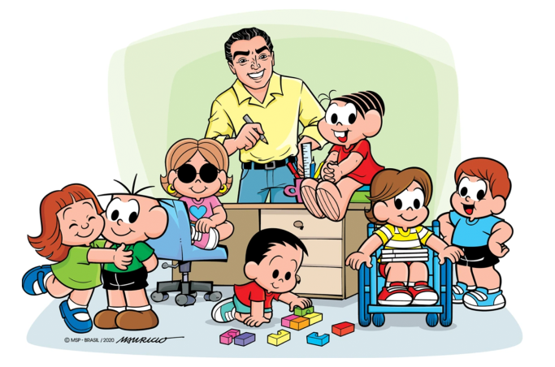

Turma da Mônica
Turma da Mônica é uma série de histórias em quadrinhos e uma franquia de mídia produzida pela Maurício de Sousa Produções, criada pelo cartunista e empresário Mauricio de Sousa. Foi originada em 1959 de tirinhas de jornal, na qual os personagens principais eram Bidu e Franjinha. A partir dos anos 1960, a série começou a ganhar a identidade atual, com a criação de Mônica e Cebolinha, entre 1960 e 1963, que passaram a ser os protagonistas. Embora a maior parte das histórias gire em torno das aventuras de Mônica, Cebolinha e seus amigos do Bairro do Limoeiro, o termo do título se refere também às demais famílias de personagens criados por Mauricio de Sousa, derivadas de outras séries, como Turma do Chico Bento, Turma da Tina, Turma da Mata, Turma do Penadinho, entre outros.
Confira algumas fotos da história:


